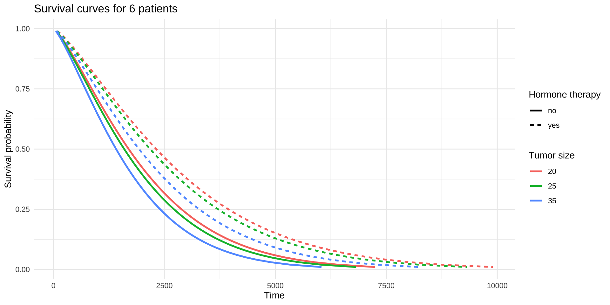
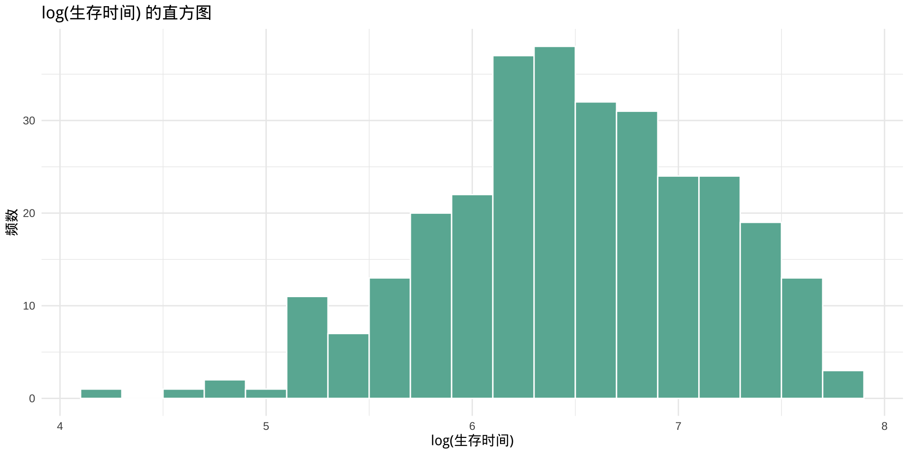

L5 AFT模型
2025-07-20
大纲
5.1 AFT模型简介
5.2 Weibull基线生存曲线
5.3 Weibull模型的估计
5.4 Weibull模型的预测
5.1 AFT模型
5.1.1 AFT模型核心思想
加速失效时间模型(Accelerated Failure Time Model, AFT模型)是生存分析中的一种统计方法，AFT模型认为协变量(如治疗、年龄等)会加快或减慢事件发生的速度。
5.1.2 AFT模型的优势
AFT模型不依赖比例风险假设，而是假设协变量对生存时间的对数具有线性影响。
AFT模型是参数模型，研究者可指定生存时间的分布(如Weibull、指数、对数正态、对数逻辑等)。
AFT模型通过完全似然(full likelihood)方法，利用生存时间的分布信息，结合删失数据的特性进行建模。在某些数据集(特别是删失比例不高或分布假设明确时)，AFT模型可能提供更精确的参数估计。
5.1.3 应用场景
医疗领域中，如果研究某种治疗是否能延长患者的生存时间，AFT模型通常比CoxPH模型更合适，因为AFT模型是直接对生存时间进行建模的。
当数据中存在交互作用或协变量效应随时间变化(比如某药物的效果会随着时间推移而减弱)时，AFT模型相比CoxPH模型更加灵活，能更好地适应这类非比例风险的数据。
5.1.4 AFT模型的局限性
AFT模型需要指定生存时间的分布，如果分布假设错误，可能导致模型拟合不佳。
AFT模型的计算复杂度通常高于CoxPH模型，尤其在大数据集或复杂分布下。
CoxPH模型在处理高维协变量或不需要明确分布假设的场景中可能更稳健。
5.1.5 AFT模型的设定
数学形式为：
\[ \log(T) = \beta_0 + \beta_1 X_1 + \cdots + \beta_p X_p + \sigma \varepsilon \]
- \(T\)：生存时间
- \(X\)：协变量向量
- \(\beta\)：回归系数，\(\beta_j\)代表\(x_j\)每增加一个单位，log(T)增加\(\beta_j\)个单位
- 当 \(\beta_j > 0\)：协变量\(x_j\) 延长生存时间
- 当 \(\beta_j < 0\)：协变量$ x_j$缩短生存时间
- \(\varepsilon\)：随机误差项，服从某种分布(这种分布决定了模型的具体类型)
- \(\beta_0\)：截距项, 基线生存时长的对数
- \(\sigma\)：尺度参数
对数-线性回归模型，对数生存时间服从线性模型。
AFT模型：常见的分布类型
| 模型类型 | \(\epsilon\)分布 | 生存时间分布 |
|---|---|---|
| Weibull | Extreme value | Weibull分布 |
| Exponential | Gumbel | 指数分布 |
| Log-normal | 正态分布 | 对数正态分布 |
| Log-logistic | Logistic分布 | 对数逻辑分布 |
使用 survreg() 拟合这些模型。
比较：AFT模型 VS. Cox比例风险模型
建模方式不同
AFT模型：直接建模生存时间的对数(log(T))
Cox模型：建模协变量对风险函数的相对影响(比例风险)
参数解释不同
AFT模型：参数表示生存时间被“加速”或“减缓”的倍数
Cox模型：参数表示风险函数的相对变化(如风险增加50%)
对分布的要求不同
AFT模型：需要指定误差项的分布(如对数正态、Weibull)
Cox模型：无需指定生存时间分布，是半参数模型
拟合方法不同
AFT模型：使用极大似然估计(Maximum Likelihood)
Cox模型：使用偏似然估计(Partial Likelihood)
预测能力不同
AFT模型：可以预测具体的生存时间
Cox模型：只能估计相对风险，不直接预测时间
5.2 AFT模型语法结构
其中 formula 通常写作 Surv(time, status) ~ 变量1 + 变量2 + …
data 指数据框
dist指定生存时间的分布：“weibull”、“lognormal”、“loglogistic”、“exponential”、“gaussian”, 默认是”weibull”。
5.3 Weibull模型实操
5.3.1 Weibull基线生存曲线
time：生存时间(天)
cens：删失状态(1=事件发生，0=删失)
horTh：激素治疗hormonal therapy (yes/no)
age：年龄
menostat：绝经状态 menopausal status(绝经前pre和绝经后post)
tsize：肿瘤大小(毫米)
tgrade：肿瘤分级(I/II/III)
pnodes：阳性淋巴结数量 number of positive nodes
progrec：肿瘤组织中孕激素受体的含量(单位：fmol)
estrec：肿瘤组织中雌激素受体的含量(单位：fmol)
构造绘制基线生存曲线的数据框
# 拟合Weibull分布生存模型(无协变量)
wb <- survreg(Surv(time, cens) ~ 1, data = GBSG2)
# 设置一系列生存概率
surv <- seq(0.99, 0.01, by = -0.01)
# 计算每个生存概率对应的生存时间
t <- predict(wb, type = "quantile", p = 1-surv, newdata = data.frame(1))
# 整理结果为数据框
surv_wb <- data.frame(time = t, surv = surv)
# 查看前几行结果
head(surv_wb) time surv
1 60.6560 0.99
2 105.0392 0.98
3 145.0723 0.97
4 182.6430 0.96
5 218.5715 0.95
6 253.3125 0.94绘制基线生存曲

比较：Kaplan-Meier 曲线 vs. Weibull 生存曲线
Kaplan-Meier 曲线(KM曲线)
呈阶梯状，每当一个事件(如死亡)发生时下降
不依赖分布假设，属于非参数方法
难以进行协变量的调整与预测性分析
Weibull 模型的生存曲线
基于分布假设，构建连续光滑的生存曲线
便于纳入协变量，适用于回归分析
可视为用参数模型替代非参数估计，提升推断能力
Weibull 分布具有灵活性，可模拟不同类型的风险变化
5.3.2 估计Weibull 模型
survreg()
Call:
survreg(formula = Surv(time, cens) ~ horTh + tsize, data = GBSG2)
Value Std. Error z p
(Intercept) 7.96070 0.10413 76.45 < 2e-16
horThyes 0.31176 0.09602 3.25 0.0012
tsize -0.01218 0.00272 -4.47 7.8e-06
Log(scale) -0.26494 0.04952 -5.35 8.8e-08
Scale= 0.767
Weibull distribution
Loglik(model)= -2623.2 Loglik(intercept only)= -2637.3
Chisq= 28.17 on 2 degrees of freedom, p= 7.6e-07
Number of Newton-Raphson Iterations: 5
n= 686 估计结果解读
Weibull模型的表达式
\[ \log(T) = \mu + \beta_1HorTh + \beta_2tsize + \sigma \epsilon \] 将估计的系数代入上式
sigma = exp(log(scale)) = exp(-0.265) = 0.767
\[ \log(T) = 7.96070 + 0.31176 \mathrm{horTh} - 0.01218 \mathrm{tsize} + 0.767\epsilon \]
截距7.960，表示基线人群（未接受激素治疗，肿瘤大小为0）的生存时间是exp(7.960) = 2,864.97天。
激素治疗(horThyes)的系数0.312，激素治疗者比未治疗者生存时间延长约 exp(0.312) ≈ 1.37倍,
肿瘤大小(tsize)系数-0.012，肿瘤每增加 1 毫米，生存时间缩短约 exp(-0.012) ≈ 0.988 倍,
log(scale)的解读
- scale 是 Weibull 分布在 AFT模型中的尺度参数，影响生存时间的“拉伸程度”。Log(scale) = -0.267, scale = exp(-0.267) = 0.766. Weibull分布的形状参数shape = 1/scale，scale<1, shape > 1,表示风险随时间递增。
Weibull分布的形状参数shape = 1/scale
scale < 1, shape > 1，风险随时间递增
scale = 1, 风险随时间不变，退化为指数模型
scale > 1, shape < 1，风险随时间递减
似然比检验：检验模型的整体显著性
Loglik(model)= -2623.2，Loglik(intercept only)= -2637.3：表示含协变量模型 vs. 截距模型的对数似然值。
Chisq= 28.17 on 2 degrees of freedom, p= 7.6e-07：似然比检验表明两个协变量联合显著（整体模型有效）。
5.3.3 从 Weibull 模型中计算生存时间指标
计算中位生存时间
Code
horTh tsize
1 no 25
2 yes 25Code
horTh tsize median_time
1 no 25 1595.547
2 yes 25 2179.232计算分位数生存时间
Code
q25 q50 q75 horTh
1 812.618 1595.547 2715.660 no
2 1109.891 2179.232 3709.106 yes5.3.4 绘制不同组别的生存曲线
# 1.拟合模型
wb_fit <- survreg(Surv(time, cens) ~ horTh + tsize, GBSG2)
# 2.虚拟患者数据
patients <- expand.grid(
horTh = c("no", "yes"),
tsize = as.numeric(quantile(GBSG2$tsize, c(0.25, 0.5, 0.75)))
)
# 3.生存概率
probs <- seq(0.99, 0.01, -0.01)
# 4.计算生存时间
times <- predict(wb_fit, type = "quantile", p = 1 - probs, newdata = patients)Code
'data.frame': 594 obs. of 4 variables:
$ horTh: Factor w/ 2 levels "no","yes": 1 1 1 1 1 1 1 1 1 1 ...
$ tsize: num 20 20 20 20 20 20 20 20 20 20 ...
$ time : num 65.9 112.5 154.2 193.1 230 ...
$ surv : num 0.99 0.98 0.97 0.96 0.95 0.94 0.93 0.92 0.91 0.9 ...
5.4 其他AFT模型
指数模型(Exponential)
fit_exp <- survreg(Surv(time, cens) ~ horTh + tsize, data = GBSG2, dist = "exponential")
summary(fit_exp)
Call:
survreg(formula = Surv(time, cens) ~ horTh + tsize, data = GBSG2,
dist = "exponential")
Value Std. Error z p
(Intercept) 8.16414 0.13052 62.55 < 2e-16
horThyes 0.36130 0.12461 2.90 0.0037
tsize -0.01468 0.00354 -4.15 3.4e-05
Scale fixed at 1
Exponential distribution
Loglik(model)= -2636 Loglik(intercept only)= -2647.8
Chisq= 23.66 on 2 degrees of freedom, p= 7.3e-06
Number of Newton-Raphson Iterations: 4
n= 686 –
对数正态模型(Lognormal)
fit_lnorm <- survreg(Surv(time, cens) ~ horTh + tsize, data = GBSG2, dist = "lognormal")
summary(fit_lnorm)
Call:
survreg(formula = Surv(time, cens) ~ horTh + tsize, data = GBSG2,
dist = "lognormal")
Value Std. Error z p
(Intercept) 7.70632 0.11862 64.97 < 2e-16
horThyes 0.31527 0.10144 3.11 0.0019
tsize -0.01370 0.00324 -4.23 2.3e-05
Log(scale) 0.07697 0.04472 1.72 0.0852
Scale= 1.08
Log Normal distribution
Loglik(model)= -2605.2 Loglik(intercept only)= -2618.9
Chisq= 27.34 on 2 degrees of freedom, p= 1.2e-06
Number of Newton-Raphson Iterations: 3
n= 686 如何选择？
检查 \(\log(T)\)的分布：
正态分布：选择Log-Normal模型
逻辑斯蒂分布：选择Log-Logistic模型
极值分布：选择Weibull模型或Exponential模型
Code

拟合三种分布，比较 AIC 或 BIC，选择值最低的模型。
fit_weibull <- survreg(Surv(time, cens) ~ horTh + tsize, data = GBSG2, dist = "weibull")
fit_exp <- survreg(Surv(time, cens) ~ horTh + tsize, data = GBSG2, dist = "exponential")
fit_lnorm <- survreg(Surv(time, cens) ~ horTh + tsize, data = GBSG2, dist = "lognormal")
AIC(fit_weibull, fit_exp, fit_lnorm) df AIC
fit_weibull 4 5254.381
fit_exp 3 5277.940
fit_lnorm 4 5218.431总结
模型拟合：使用 survreg(Surv(time, cens) ~ horTh + tsize, data, dist = “weibull”) 拟合AFT模型
生存曲线：predict(model, type = “quantile”) 计算时间，ggsurvplot_df() 或 ggplot() 绘制曲线
参数解读：回归系数通过 exp(系数) 转换为生存时间倍数，scale 决定Weibull形状
模型选择：检查 log(time) 分布直方图，比较 AIC() 选择最佳分布（如Weibull、指数）
https://lizongzhang.github.io/survival
© 2025 2025 医咖会 Li Zongzhang